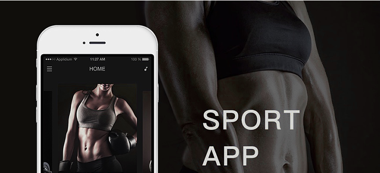

手机APP发展趋势

浅谈手机APP四大发展趋势
人们对于云计算和大数据的历来程度越来越高，以至很
多企业开始重视对移动设备的设计。
2017年2月27日
趋势一：云计算
#手机APP的发展趋势#
在此基础上，展望未来几年，移动趋势越来越明显。
趋势二：APP跨平台布局
目前来看，企业对APP的需求是很大的，APP平台布局这种趋势
更适用于企业场景；
适用于企业的在线APP将是有效的数据管理。
趋势三：移动分享
随着移动技术及其广泛使用，充分利用个人智能技术发挥高效
的价值，让人们通过APP保持联通，让分享更便利，是移动发
展的一大篇章。人们对于信息移动性的需求越来越旺盛，无论
在职场还是生活中，用移动设备分享内容都是很必要的。
趋势四：营销与用户需求并重
对于一款好的APP来说，本身的用户体验和内容质量以及后期
的推广可以说是各占一般的权重，没有后期推广，安装用户量
太少，就可能陷入资金方面的问题
视频直播APP发展趋势：
社交化：视频直播的核心还是社交，对入口和传播的依赖性比较强
开放化：网红对视频直播起到了一定的推动作用
VR+直播：一种新媒介的出现，将导致一种新文明的产生
对于移动市场APP来说，移动网民的覆盖率已经超过 90%，获取新用户难上加难，这个时候更考验的是APP对用户存留的运营能力。
从2016年就不断有人提到这个概念，而在2017年的移动市场将更加普及。